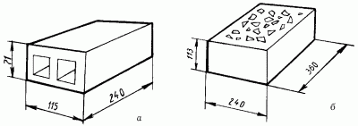
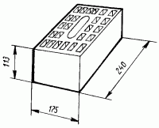
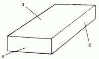

Материалы для устройства фундаментов.

Бетон – один из древнейших материалов и заслуживает особого разговора. Из бетона построено большинство современных домов, площадки для детских игр, дороги, плотины и многое другое. Поэтому его справедливо называют королем строительных материалов. Знаменитый итальянский архитектор П. Л. Нерви как-то сказал, что бетон – наилучший из материалов, изобретенных человеком. Именно поэтому мы решили рассказать о бетоне более подробно.
Из истории изобретения бетонаСамо слово «бетон» французского происхождения, оно стало впервые употребляться в XVIII веке во Франции. До этого водно-цементный раствор именовался по-разному. Литая кладка с каменным наполнителем называлась греческим словом «эмплектон». Древние римляне называли бетон «rudus». При обозначении таких понятий, как раствор для устройства фундаментов и стен, употреблялось словосочетание «оpus caementum». Именно под таким названием и стал известен римский бетон.
Самый первый бетон, обнаруженный археологами, относится к 5600 году до н. э. Он был найден в поселке Лапински Вир на территории бывшей Югославии, в одной из хижин древнего поселения каменного века, где из него был сделан пол толщиной 25 см. Бетонный раствор для этого пола приготовлен с использованием гравия и местной красноватой извести.
В Египте в гробнице Теве обнаружен бетон, датируемый 950 годом до н. э. Кроме этого, бетон использовали при строительстве галерей египетских пирамид и монолитного свода пирамиды Нима.
В Древнем Риме бетон использовался в качестве строительного материала около IV века до н. э. Материал получил название «римский бетон» и применялся примерно на протяжении 7 веков. С тех пор прошли столетия, однако сооружения, построенные из римского бетона, сохранились до наших дней. Некоторые из них, например римский Пантеон, пережили несколько довольно крупных землетрясений.
Фундаментные работы в древнем Риме значительно облегчало то обстоятельство, что вулканическая почва в его окрестностях довольно долго оставалась плотной, что позволяло применять для строительства фундаментов самую обычную дощатую опалубку.
Исследования древних поселений показали, что для строительства применяли два вида бетона – искусственный и природный. Природный делали из камней, образовавшихся из обломочных частиц горных пород и связанных между собой различными минеральными веществами, например известью, гипсом или кальцитом. К природному бетону относят брекчию, конгломерат и песчаник. Когда человек придумал искусственный бетон, те же самые камни стали связывать между собой другими веществами – гипсом, глиной.
Самый простой вид бетона – глинобетон, состоящий из твердого камневидного материала из смеси глины с песком и соломой. Он приобретал достаточную прочность после просушки на солнце.
Гипсобетоном называют бетон, изготовленный на гипсовых вяжущих, получаемых на основе полуводного или безводного сульфата кальция.
Искусственные бетоны в древности не получили широкого распространения, поскольку не обладали достаточной прочностью: глина, известь и гипс размокали под водой, и строение разрушалось. Именно поэтому античные строители предпочитали использовать природные материалы. Но попытки создания искусственного вяжущего материала продолжались.
Древние римляне заметили, что известь, смешанная с так называемыми пуццолановыми (название произошло от местности Пуцциуоли неподалеку от Неаполя) добавками, напротив, приобретала еще большую твердость от воздействия воды. Известь такого типа получила название гидравлической.
О. Шуатре, известный историк архитектуры, сумел реконструировать процесс укладки каменного бетона. Для приготовления раствора известь смешивали с пуццолановыми добавками. Затем между двумя облицовочными стенами укладывали толстый слой раствора, сверху выкладывали измельченный щебень с размером зерен до 8 см. На следующем этапе раствор трамбовали до тех пор, пока он не заполнял все промежутки между щебнем.
Открытие римлянами свойств пуццолановых добавок улучшило качество римского бетона, что не могло не способствовать его дальнейшему распространению. Во II веке н. э. римляне разработали и стали использовать новые виды вяжущих веществ – таких, как, например, романцемент, позволивший в большей степени улучшить физико-механические характеристики строящихся бетонных сооружений.
После падения Рима многие секреты древних зодчих были утрачены. Спустя столетия английский архитектор Джон Смит обратил внимание на то, что под действием воды негашеная известь в смеси с глиной затвердевает. Он добавил к этому составу песок и каменный шлак и получил довольно прочное вещество, которое использовал при строительстве фундамента под Эддистонский маяк.
Так же давно стали известны человеку и свойства вяжущих веществ – глины и жирной земли, которые приобретали относительную прочность после смешивания с водой. Однако достаточную прочность они не давали. Именно поэтому в Китае, Индии и Египте примерно за 3 тысячи лет до н. э. посредством термической обработки исходных материалов были разработаны искусственные вяжущие – гипс и известь.
В 60-х годах XIX века французский садовник Жозеф Монье придумал самые прочные в мире кадки для деревьев из железобетона. Он просто свернул металлическую сетку и залил ее бетонным раствором. В то время Монье даже и не подозревал, что в ближайшем будущем его изобретение станет главным материалом для строительства большинства зданий, особенно высотных.
Прошли века, бетон стали использовать и в других, казалось бы далеких от строительства, отраслях – таких, например, как судостроение (в первой половине XX века были построены множество речных и морских судов с применением железобетона), авиация (изготовление крыльев и фюзеляжей самолетов), железнодорожный транспорт (железнодорожные вагоны и рамы цистерн). Американцы пошли еще дальше: они предложили построить на Луне бетонный завод с системой специализированных складов. Для этого предполагалось доставлять с Земли бетон и другие необходимые строительные материалы, а саму доставку осуществлять с помощью специализированных транспортных кораблей.
Таким образом, бетон по праву занимает одно из ведущих мест среди остальных строительных материалов. Так как он является основным материалом для строительства фундаментов, то к нему соответственно предъявляются особые требования. Например, бетон должен обладать следующими качествами:
– прочность;
– плотность;
– морозостойкость;
– водонепроницаемость;
– химическая стойкость к агрессивной среде.
По плотности бетон делится на:
– особо тяжелый (более 2500);
– тяжелый (2000–2500);
– нормальный (1800–2000);
– легкий (500–1800);
– сверхлегкий (менее 500).
Прочность на сжатие зависит от плотности бетона и распределяется пропорционально ей:
– особо тяжелый бетон имеет марку от 400 до 1000;
– тяжелый бетон – М100–М600;
– нормальный – М50–М400;
– легкий – М25–М200;
– сверхлегкий – М4–М100.
Цементный бетон при строительстве домов замешивают непосредственно на месте строительства или на специализированных бетонных заводах, откуда их доставляют на бетоновозах.
Другие строительные материалы для фундаментных работДля устройства фундаментов применяют бетон на цементном вяжущем, пористые или плотные заполнители, цементо-грунт, природные или искусственные каменные материалы. Материал для фундамента должен обладать достаточной прочностью, морозостойкостью и устойчивостью к воздействию внешней среды.
Каменные природные материалы делят на две группы:
– грубообработанные каменные материалы;
– природные каменные материалы, прошедшие механическую обработку.
К материалам первой группы относят:
– бутовый камень;
– гравий;
– гальку;
– песок.
Бутовый камень, или бут, представляет собой крупные куски неправильной формы, размером от 150 до 500 см, массой от 10 до 35 кг. Бутовые камни получают взрывным способом из различных горных пород особой прочности.
По способу изготовления различают три вида бутового камня: постелистый, рваный и плитняковый. Постелистый бутовый камень получают выломкой из слоистых пород, плитняковый бутовый камень – из осадочных и метаморфических пород со сланцевым строением, рваный бутовый камень получают в результате взрывных работ.
Более удобны для работы постелистый и плитняковый бутовые камни, а вот со рваным бутом работать очень трудно: между камнями неправильной формы образуются пустоты, которые нужно заполнять. Для этого приходится подбирать камни меньшего размера или же раскалывать большие.
Бутовый камень имеет свой «сертификат качества». Хороший материал для строительства должен быть однородным, не иметь трещин, следов расслоения или выветривания, не содержать примеси глины или иных пород.
Основным показателем качества бутового камня является его морозостойкость, что представляется весьма важным при строительстве жилых домов. Считается, что морозостойкость в идеале должна составлять не менее 15 циклов, иначе говоря, материал должен оставаться годным к эксплуатации после 15 циклов замораживания и оттаивания.
Раздробленный в мелкие куски бутовый камень называют щебнем, который засыпают под бетонные фундаменты.
Существуют смеси грубо– и мелкообломочных пород. Однако чисто гравийных пород нигде не встречается. Чаще всего гравий залегает вместе с песком, образуя при этом песчано-гравийные массы. В дальнейшем эти массы сортируют и также используют в строительстве.
Гравий – каменный материал, образовавшийся в результате выветривания горных пород. В зависимости от происхождения он бывает овражный, или горный, речной и морской. Этот материал в любом случае содержит какие-либо примеси: песок, пыль, глину, слюду. Гравий, применяемый для бетона, не должен содержать их. Самым лучшим считаются речной и морской: в них не содержатся примеси, у них гладкая поверхность. Более шероховатая поверхность у горного гравия, что обеспечивает лучшее сцепление с цементом при изготовлении бетона.
Щебень представляет собой смесь угловатых каменных обломков размером от 15 до 150 мм, различной формы. Щебень получают путем дробления горных пород – таких, как гранит или диабаз, а также некоторых других плотных и водостойких осадочных пород. Для строительства берут щебень из твердых пород, обладающих достаточной прочностью и морозостойкостью.
Форма этого материала чаще всего напоминает форму куба или тетраэдра. Именно такой щебень больше всего подходит для строительства. Бывает также щебень плоской, так называемой лещадной формы, непригодной для строительства вследствие большой ломкости.
К природным каменным материалам, прошедшим механическую обработку, относятся блоки и строительные камни.
Блоки из природного камня производят двумя способами из предварительно выбранных горных. В первом случае получают массивные куски камня неправильной формы, которые обтесывают с помощью долота, в результате чего образуется каменный блок правильной формы.
Во втором случае буровзрывным способом откалывают большие куски камня, которые затем также обтесывают, придавая им правильную геометрическую форму.
Каменные блоки применяют для строительства фундаментов и кладки стен. Это очень выгодно, поскольку каждый блок заменяет примерно 10–12 кирпичей. Однако у каменных блоков имеются и недостатки. Прежде всего к ним относится трудность транспортировки на строительную площадку: один блок может весить от 100 до 500 кг. В том случае, если требуется особая прочность и атмосферная стойкость, отдают предпочтение крупным каменным блокам.
Природные минеральные материалыК природным минеральным материалам относят горные породы и минералы, из которых получают искусственные строительные материалы на основе вяжущих веществ – цемент, гипс, известь и некоторые другие. Природные минеральные материалы делят на две группы:
– горно-технические;
– горно-химические.
К горно-техническим материалам относят каолины, огнеупорные глины, кварцевые пески, карбонатные породы, гипс, мел, кварциты и другие породы.
К горно-химическим материалам относят фосфориты, селитры, мел и другие. Для устройства фундаментов они не используются.
Глина – осадочная порода, состоящая из мельчайших частиц размером примерно 0,001 мм. Это качество глины обуславливает ее высокую дисперсность, то есть хорошую смешиваемость с водой. Глина обладает и пластичностью – способностью принимать в разведенном виде любую форму. Существует несколько видов глин:
– каолин, или белая глина, служащий сырьем для изготовления фарфоровой посуды;
– формовочная глина, из которой выполняют формы для литья металлов;
– цементная;
– кирпичная.
Цементные глины, различающиеся цветом и минеральным составом, используются при получении портландцемента, кирпичные глины с примесью песка – для изготовления кирпичей.
В зависимости от содержания песка глины бывают жирными или тощими. В жирных глинах песка мало, а в тощих много.
В древности для строительства зданий применяли кирпич-сырец. Делали его следующим образом: сбивали деревянный ящик-форму и наполняли его глиной, после чего высушивали на солнце и обмазывали битумом.
Египтяне заметили, что после обжига глина приобретала свойства камня. Так возникло кирпичное производство, сохранившееся и до наших дней.
В России обожженный кирпич появился в 1476 году. Именно тогда зодчий В. Ермолин реставрировал одну из старых церквей «кирпичом ожиганным».
Отдельно стоит группа строительных материалов специального назначения – кирпич клинкер, кирпич глиняный лекальный и кислотоупорный кирпич. Для устройства фундаментов особой прочности используют кислотоупорный кирпич, приспособленный для защиты строительных конструкций от действия агрессивной среды.
Обожженный, или строительный, кирпич бывает нескольких видов:
– обыкновенный;
– облицовочный;
– дорожный;
– огнеупорный.
Облегченный пустотелый, продольно-дырчатый и вертикально-дырчатый кирпичи (рис. 6), отличающиеся высокими теплоизоляционными свойствами, применяют при возведении легких внутренних стен.

Рис. 6. Виды кирпичей: а – продольно-дырчатый; б – вертикально-дырчатый.
К необожженным относят силикатный кирпич, обычно светло-серого или белого цвета. Размеры массивного и полого силикатного кирпича практически не отличаются от размеров обычного обожженного кирпича.
В массивном кирпиче могут быть сквозные отверстия (рис. 7).

Рис. 7. Массивный кирпич.
Из 6 граней кирпича выделяют две большие, так называемые постели, при кладке – верхнюю и нижнюю. Другие большие грани называют ложковыми, а две небольшие – тычковыми (рис. 8).

Рис. 8. Грани кирпича: а – постель; б – ложковая; в – тычковая.
Для выполнения того или иного вида перевязки при строительстве нередко приходится делить кирпич на части, которые имеют специфические названия. Так, например, часть кирпича, нижняя и верхняя постели которого имеют форму квадрата, называется «три четверти»; расколотый пополам по всей длине кирпич образует длинные половины. Часть кирпича, отколотая поперек его длинной части, с размером, равным высоте кирпича, называется четвертью.
Вяжущие материалыМинеральными вяжущими средствами называют порошкообразные материалы, образующие при смешивании с водой пластичное тесто, которое после затвердевания приобретает свойства камня. При этом вяжущие скрепляют между собой камни или песок, щебень, гравий. Минеральные вяжущие обладают способностью затвердевать на воздухе (в этом случае они называются воздушными) или в воде (гидравлические).
К гидравлическим вяжущим относятся портландцемент и все цементы на его основе.
Различают несколько видов цементов:
– романцемент;
– портландцемент;
– глиноземистый цемент.
Романцемент – гидравлическое минеральное вяжущее вещество, получаемое из тонкомолотых известковых и магнезиальных мергелей, в составе которых может присутствовать до 25 % глины, иногда и больше. Для получения романцемента минеральное сырье обжигают, не доводя его до спекания. Получаемые в результате обжига низкоосновные силикаты и алюминаты придают романцементу способность схватываться в воде.
Романцемент применяют для изготовления строительных растворов, бетонов и т. д.
Портландцемент – продукт тонкоизмельченного цементного клинкера, в составе которого присутствует до 5 % гипса. Этот компонент регулирует сроки схватывания портландцемента. Сам же клинкер представляет собой зернистый материал, полученный обжигом до спекания сырьевой смеси – известняков с высоким содержанием карбоната кальция, глинистых пород. Клинкер – наиболее важный из компонентов в производстве портландцемента, поскольку именно он определяет его свойства.
Готовый портландцемент представляет собой тонкомолотый порошок темно-серого цвета.
Глиноземистый цемент – быстротвердеющее высокопрочное гидравлическое вяжущее вещество, по минеральному составу и химическим свойствам сильно отличающееся от портландцемента. Глиноземистый цемент получают в результате спекания смеси известняка и боксита. Главной особенностью глиноземистого цемента является его необычайно быстрое схватывание.
Композиционные строительные материалыДля строительства фундаментов часто используют так называемые композиционные материалы – строительные материалы, совмещенные с другими, например железобетон.
Композиционный материал, как правило, состоит из двух компонентов: упрочняющего вещества в виде твердых частиц или волокон и связующего. Самым популярным композиционным материалом является асбестоцемент.
Асбестоцементные материалыИсходным материалом для производства асбестоцемента является асбест – тонковолокнистый минерал. Асбест известен очень давно. В древности его называли горным льном, минеральной пряжей, горным волокном, саламандрой.
Асбест поистине удивительный материал, обладающий огнестойкими свойствами. Упоминание об этом можно найти в записках итальянского путешественника Марко Поло, который писал, что асбест находят в саламандре, и, если животное бросить в огонь, оно не сгорит.
Автор 37-томной «Естественной истории» Плиний Старший писал, что этот загадочный материал «обитает» в безводных пустынях Индии, а потому высокие температуры не оказывают на него никакого действия.
Несмотря на ореол загадочности, в древности из асбеста добывали волокна и пряли пряжу. Например, на северо-западе Италии жили мастера, славившиеся искусством выделки изящных перчаток, кружев и салфеток из асбестовой пряжи.
Примерно с 1720 года асбест стал известен и в России, где его назвали каменной куделькой. Купец Демидов как-то подарил Петру I красивую скатерть серебристого цвета. На обеде Демидов якобы нечаянно опрокинул на скатерть бокал с вином и тарелку с жирным блюдом, затем прямо на глазах у изумленного царя снял скатерть со стола и швырнул ее в камин. Спустя несколько минут Демидов вынул скатерть, дал ей немного остыть и заново расстелил. На скатерти не было ни пятнышка.
Спустя много лет горный лен получил признание во всем мире и стал называться «асбест», что в переводе с греческого означает «несгораемый». Добыча асбеста стала крупнейшей отраслью промышленности.
Асбест представляет собой волокнистые разновидности минералов двух групп – амфибола и серпентина (змеевика). К группе серпентина относится хризотил-асбест, а к группе амфибола – амфибол-асбест. Наибольшее применение получил хризотил-асбест: он бывает белого, серебристо-белого, золотисто-желтого и зеленого цветов и способен расщепляться на гибкие и тонкие волокна.
Асбест добывают в горных отвалах змеевика предварительным дроблением кусков. Затем после дробления из кусков змеевика извлекают волокна и раскладывают их по сортам в зависимости от длины волокон: чем они длиннее, тем выше сорт асбеста. Высшие сорта асбеста используются в текстильной промышленности, а низшие – в строительстве. Кстати, первое применение асбеста в строительстве относится к 1788 году.
На основе асбеста был разработан новейший композиционный материал – асбестоцемент, обладающий определенными физико-механическими свойствами. В союзе асбестоцемента асбест принял на себя армирующую роль: прочность на растяжение у него значительно превосходит прочность цемента.
Кроме того, асбестоцемент обладает низкой теплопроводностью, электропроводностью, звуко– и теплоизоляционными свойствами, кислото– и щелочестойкостью.
Из асбестоцемента изготавливают следующие изделия: листы, трубы, плиты, панели, некоторые фасонные детали.
Хранение строительных материаловВ строго определенном месте следует хранить не только инструменты, но и строительные материалы. Во-первых, они не придут в негодность раньше срока, во-вторых, не будут захламлять весь участок, в-третьих, не помешают при строительстве.
Весь строительный материал размещают таким образом, чтобы не пришлось затрачивать на его перевозку или переноску слишком много сил и времени. Между разными видами материалов оставляют проходы шириной 1 м. Доски, кирпичи, бревна и другие материалы складывают так, чтобы они не портились и не ломались. Если нет возможности сделать навес, их покрывают брезентом, рубероидом, пленкой.
Кирпичи складывают по маркам и сортам, цвету и оттенку в штабеля высотой до 1–1,5 м на деревянные бруски или доски. Кирпичи с несквозными отверстиями кладут отверстиями вниз, чтобы в них не скапливались осадки.
Камни складывают так же, как и кирпичи (по сорту, цвету, форме, размеру и т. д.).
Бетонные и керамические плиты ставят на ребро лицевой частью друг к другу и хранят в специальных контейнерах.
Плиты, предназначенные для фасада, хранят в контейнерах, а облицовочный материал (различные архитектурные детали) – на досках-прокладках в один ряд.
Плитки для тротуара и другие материалы для опорных покрытий складывают в штабель с подкладкой высотой примерно 1,2 м.
Сборные детали как для панельных, так и деревянных домов складывают в штабель, используя деревянные подкладки толщиной 30 см.
Древесину складывают на небольшом возвышении в штабеля, а сверху покрывают брезентом. Чтобы предупредить появление гнили и червоточины, весь материал обрабатывают 10 %-ным раствором железного купороса или 3 %-ным раствором фтористого натрия. Для этого любую емкость (можно бочку) наполовину наполняют раствором. Опускают в нее доски или бревна тем концом или стороной, которые во время хранения будут находиться на земле, и оставляют на 48 часов. После этого вынимают их из раствора и ставят в укрытие в вертикальном положении на 40 дней. Большую опасность для древесного материала представляют насекомые, бороться с которыми можно при помощи дуста, эмульсий и газообразных веществ.
Битум хранят в бочках или ящиках, не имеющих отверстий.
Сыпучие строительные материалы (щебень, гравий, песок) хранят на огражденных площадках.
Гипс, цемент и подобные им материалы ссыпают в емкости или ящики с плотно закрывающимися крышками.
Бензин и керосин хранят в бочках, зарытых в землю.
Глину складывают в яму, дно и стены которой предварительно тщательно утрамбовывают и выстилают рубероидом или плотной полиэтиленовой пленкой.
Гвозди держат в ящике с крышкой. Сверху на гвозди кладут пропитанную машинным маслом ткань.